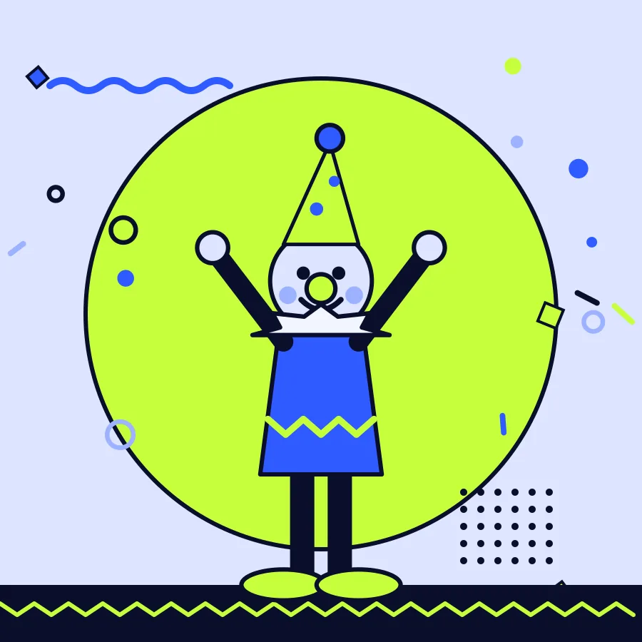
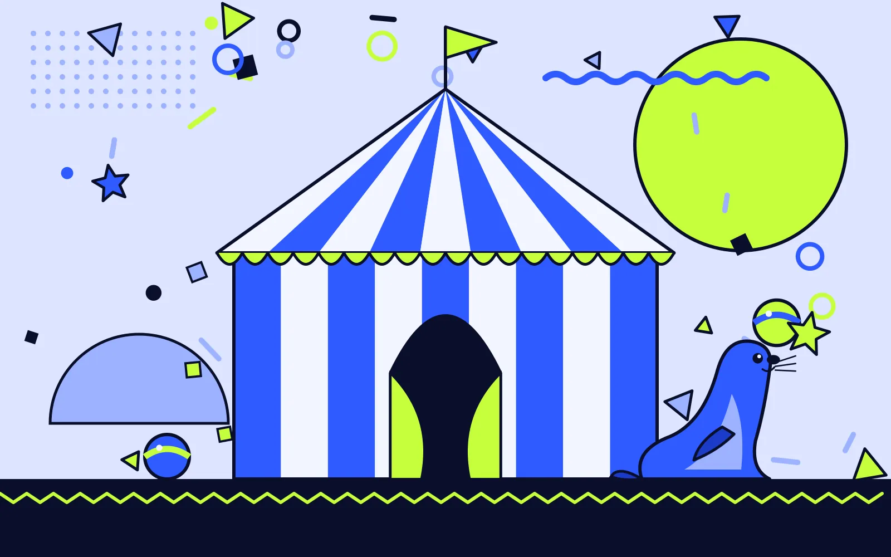
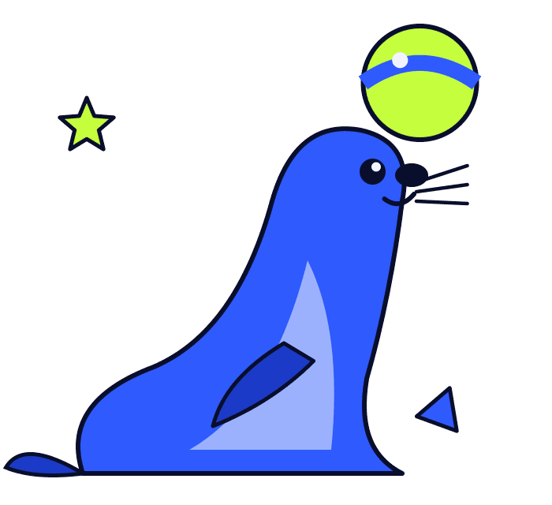
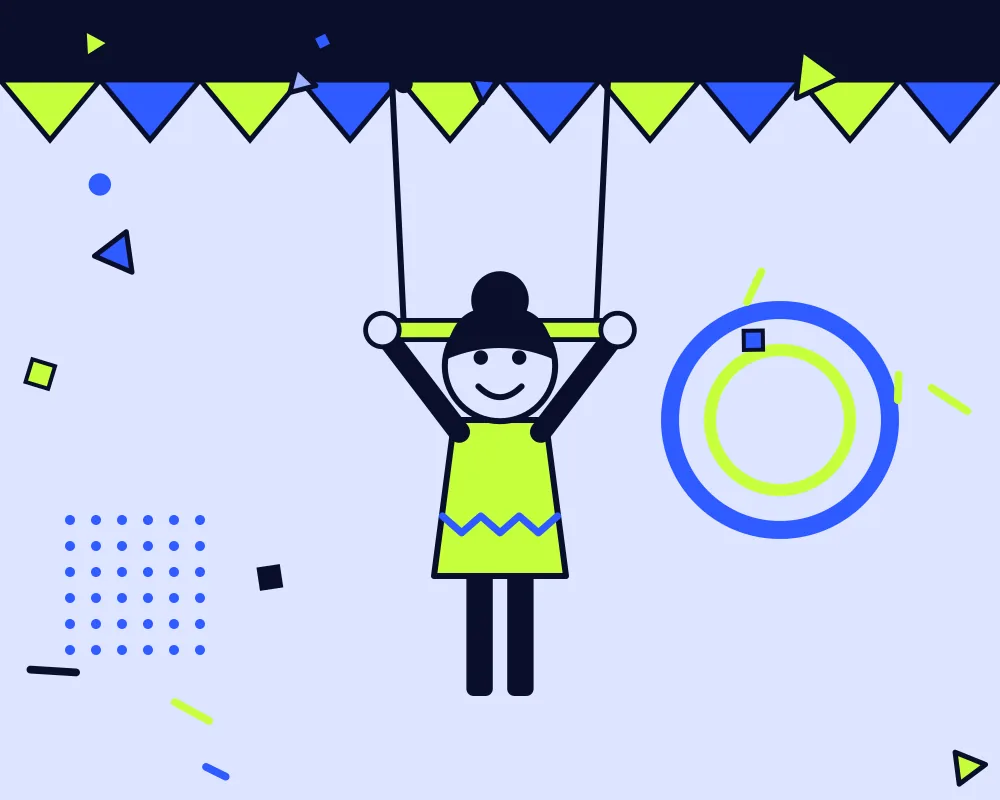
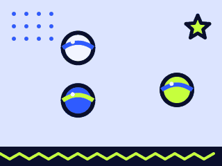
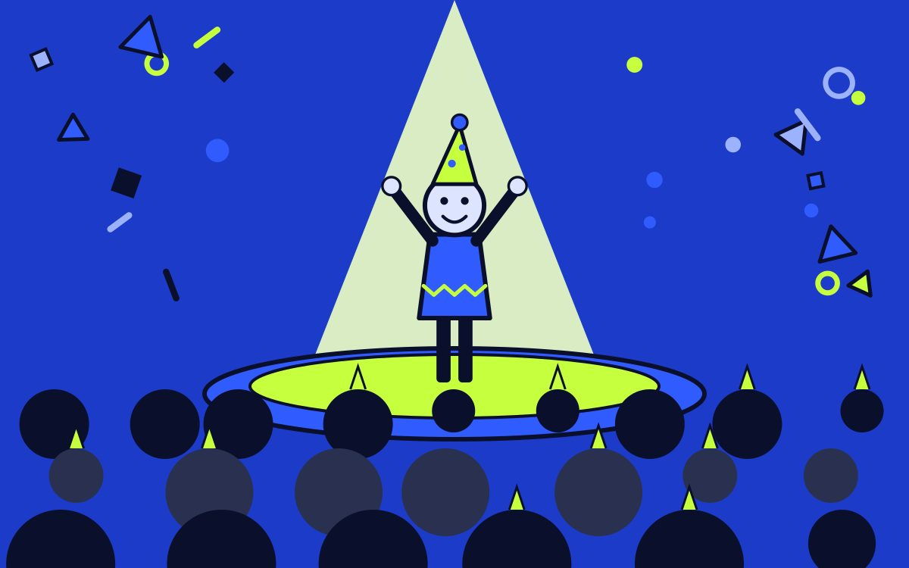

Clown Kiki
Kiki hat einen Koffer, der einfach nicht zugehen will. Was da wohl alles herausfällt? Bring gute Laune mit – und vielleicht ein Taschentuch zum Lachtränen-Trocknen.
Neu im Mai 2027!
Manege frei für Kringel, Kunststücke und ganz viel Lachen! Ein Zirkus für Kinder von 6 bis 10 Jahren – und für alle Großen, die mitkommen.
Premiere am 15. Mai 2027

Im Zirkus Zickzack ist alles ein bisschen anders: Es wird gelacht, gestaunt und mitgemacht. Hier lernst du die Stars der Show kennen. Und keine Sorge: Bei uns treten keine echten Tiere auf, nur Menschen mit ganz viel Mut und eine sehr große Puppe.

Kiki hat einen Koffer, der einfach nicht zugehen will. Was da wohl alles herausfällt? Bring gute Laune mit – und vielleicht ein Taschentuch zum Lachtränen-Trocknen.

Rolf ist so groß wie ein Auto und so weich wie ein Kissen. Zwei Puppenspieler:innen stecken in ihm. Er kann Bälle balancieren und am Ende sogar winken.

Ayla fliegt am Trapez hoch unter der Zeltkuppel. Unten liegt ein dickes Netz, damit alle sicher sind. Halt die Luft an – und dann klatschen!
Jonas wirft Bälle, Ringe und Keulen – manchmal sieben auf einmal. Zählst du mit? Nach der Show zeigt er dir, wie du selbst die ersten zwei Bälle schaffst.

Die Vorstellung dauert 90 Minuten, in der Mitte gibt es 20 Minuten Pause mit Popcorn, Wasser und Zickzack-Limo. Die Show ist für Kinder ab 6 Jahren gedacht. Jüngere Geschwister sind willkommen und sitzen bis 3 Jahre kostenlos auf dem Schoß.
Es gibt keine lauten Knalleffekte und kein Feuer. Das Licht bleibt auch während der Show gedämpft an, damit sich niemand im Dunkeln fürchtet. Das Zelt ist stufenlos erreichbar, Kinderwagen parkt ihr an der Garderobe.

Kinder zahlen 12 Euro, Erwachsene 18 Euro. Mit der Familienkarte für zwei Große und zwei Kinder spart ihr noch mehr. Die Plätze sind begrenzt, besonders am Wochenende.